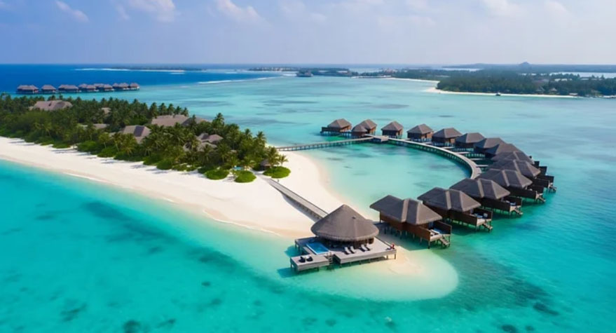
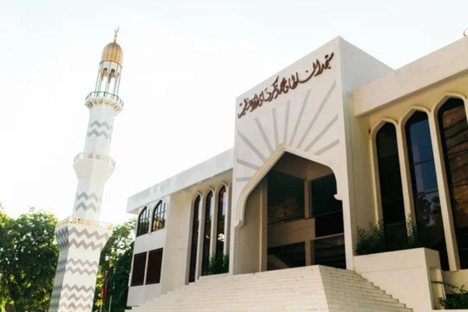
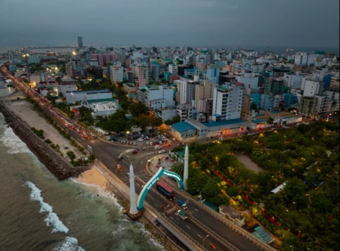
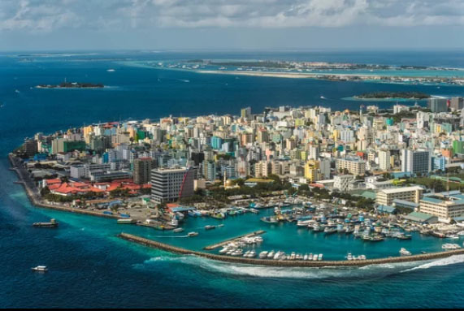
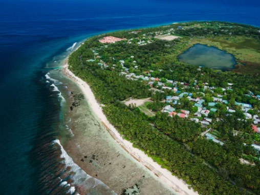
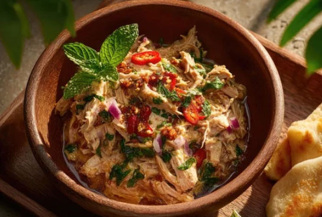
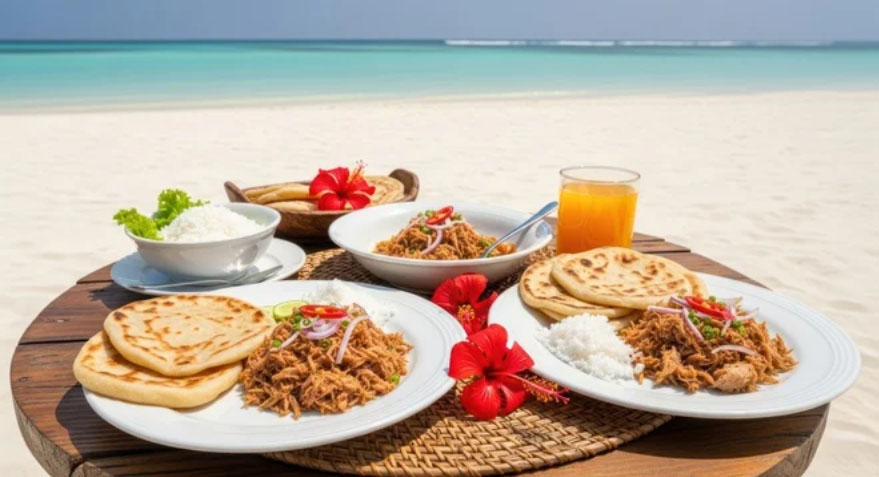

Kingdom of Coral Light
Maldives: A journey across turquoise atolls, drifting tides, and the quiet rhythm of island life shaped by sea and sky.
From sunlit lagoons to endless horizons where ocean and silence meet.
Kingdom of Coral & Ocean Silence
Iconic Landmarks
From coral-stone mosques to ocean-spanning bridges and drifting island cities, the Maldives reveals a landscape where faith, sea, and human life merge into quiet continuity.
Hukuru Miskiy (Old Friday Mosque)
Carved from coral stone and time itself, where faith has quietly endured across centuries.

Grand Friday Mosque (Masjid al-Sultan Muhammad Thakurufaanu Al Auzam)
A luminous heart of modern devotion, where white marble and golden domes rise in collective prayer.

Sinamalé Bridge
A ribbon over the sea, linking islands, lives, and the quiet ambition of a nation built on water.
Islands of Living Currents
Cities of Distinction
From compact capital streets to solitary island-cities and southern archipelagos, the Maldives unfolds as a scattered yet connected world where communities drift across the sea, bound together by tide, distance, and shared rhythm.

Malé
The compact capital where island life converges into dense streets, markets, and the political heartbeat of the nation.
Addu City
A scattered southern city of atolls and bridges, where colonial traces and island rhythms quietly coexist.

Fuvahmulah City
A solitary island-city shaped by wetlands and ocean winds, standing apart as one of the Maldives’ most distinct landscapes.
Ocean Flavour & Island Simplicity
From fresh tuna and coconut-based dishes to light soups and flatbreads, Maldivian cuisine reflects a life shaped by the sea, simplicity, and daily island rhythms.

Mas Huni
A traditional Maldivian mix of tuna, coconut, onion, and chili.
Garudhiya
A clear fish soup served with rice, lime, and chili, reflecting the Maldives’ coastal simplicity.

Roshi
A soft hand-rolled flatbread that accompanies everyday Maldivian dishes.
モルディブ共和国の歴史
Kingdom of Sea, Faith & Island Continuity
From early Buddhist and Hindu influences to the arrival of Islam and the rise of a sultanate, later shaped
by colonial encounters and modern independence, the Maldives’ history unfolds
as a quiet continuity shaped by faith, the ocean, and island resilience.
古代
初期定住時代（紀元前5世紀頃～）
インド南部やスリランカからの移住者が定住を開始。
仏教の影響（紀元前3世紀～12世紀）
アショーカ王の時代に仏教が導入され、仏教寺院が建設される。
中世
イスラム化 （1153年～）
イスラム教が導入され、スルタン制が確立。
イブン・バットゥータの訪問（14世紀）
モルディブを訪れ、イスラム教の統治を記録。
近世
ポルトガルの占領（1558年～1573年）
ポルトガルがモルディブを一時的に支配。
オランダの保護国（1645年～1796年）
オランダ東インド会社の影響下に。
イギリスの保護国（1887年～1965年）
イギリス領セイロンを通じて統治。
近現代・現代
独立とスルタン制 （1965年～1968年）
イギリスから独立し、スルタン制を維持。国連加盟
共和制への移行（1968年～）
国民投票によりスルタン制を廃止し、共和制を導入。
現代モルディブ（1968年～現在）
観光業を中心に経済発展を遂げる。
モルディブの歴史は、宗教的変遷や植民地支配、そして独立後の発展が特徴的です。
モルディブではイスラム教が国教として定められています。1153年頃にイスラム教が導入され、以降、国家の基盤や文化、社会の中心として重要な役割を果たしてきました。現在も国民のほぼ全員がイスラム教徒であり、社会的・法律的な基盤はイスラム法（シャリーア）に基づいて運営されています。 このような宗教的背景がモルディブ独特の文化や伝統を形成してきましたが、同時に観光業を主軸とする現代的な一面も興味深い点です。
英連邦との関係の変遷
加盟（1982年・1985年）: 1965年にイギリスの保護領から独立した後、1982年に特別加盟国として加わり、1985年に正式な加盟国となりました。
脱退（2016年）: 当時のヤーミーン政権下で、「国内政治への干渉」を理由に脱退を表明しました。 背景には、当時の強権的な政治姿勢や人権侵害、民主化の遅れに対して、英連邦側から資格停止（サスペンション）を警告されるなどの強い圧力を受けていたことがあります。
再加盟（2020年）: 2018年の大統領選で、民主化路線を掲げるソーリフ大統領が就任。 新政権は直ちに英連邦への復帰を申請し、民主的な手続きの改善が認められたことで、2020年2月1日に54番目の加盟国として再加盟を果たしました。